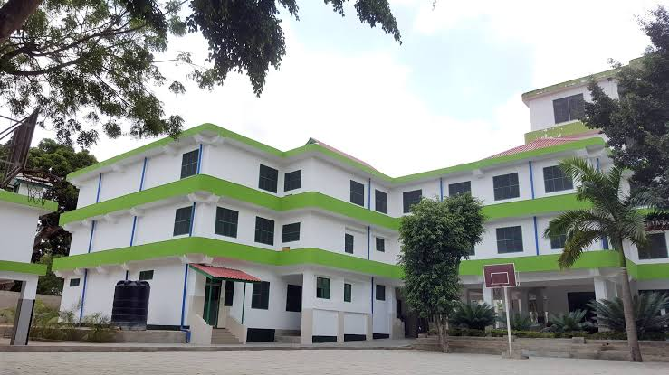
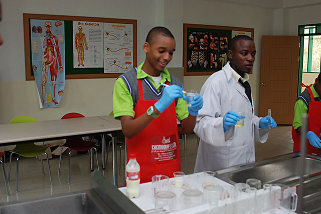
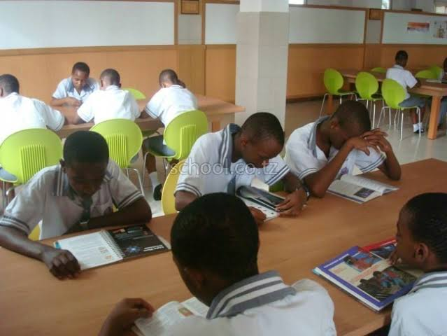

Centennial Christian Seminary (CCS) can trace its history back to the establishment of the Tanzania Presbyterian Church(TPC). TPC was established in 1994 by missionaries Rev. Deuk-Yeon Hwang and his wife Mrs. Yohannes Hwang from South Korea. Today TPC has grown into a large Christian institution with many branches all over the country. It focuses on three ministries; church mininstry, health ministry and education mininstry. it was here, under the education branch that Philadelphia Pre and Primary School(PPS) and CCS were able to emerge.
In the year 2001, TPC established a nursery school to preach the world of God to children and to teach a higher level of education. It soon expanded and in 2002 the school began its primary school,PPS. By God's grace in 2011 CCS was formed and was able to start admitting students. Under the banner of TPC, CCS has been able to expand and flourish over the years at Kongowe-Mbagala in Dar-es Salaam, Tanzania
We provide different education systems at our school. There is a sister school to Centennial Christian Seminary known as Philadelphia Pre & Primary school where it provides nursery education as well as primary education.
Centennial Christian Seminary School is Registered under Necta with the registration number S.4939 provides Ordinary Level education using the Tanzanian syllabus The school has many interactive programmes and a lot of students learning facilities such as the school library, the modern and well equiped labolatory to enhance practical learning and also a computer lab. The school conducts an interview to screen and get its students. All students who are willing to comply to the rules and regulations of the school.
The labolatory
The library
Our motto is "A NEW GENERATION LEADER" who will mentor others into executing their duties (without strings attached) on the basis of equality and sincerity to all men considering the fact that man was made in God's image and therefore entitled to any service without any condition whatsover. it is through this Christian Characterized leadership thata the world wil be touched and transformed for the glory of God.